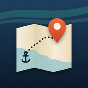

Cruise Apps
Apps for our trips.
Fjord SpotterPoint your phone at the Norwegian coast to name mountains, islands, fjords and lighthouses.

Port Pocket GuideEach port: where the ship docks, walking times to sights, opening hours, daylight, weather, money and phrases.
◷
The Hour BetweenFind a small port outing that fits your free time, walking pace, and return buffer.
⚓
Port Side QuestsCurious missions ashore, with safe time planning and a discovery photo journal.